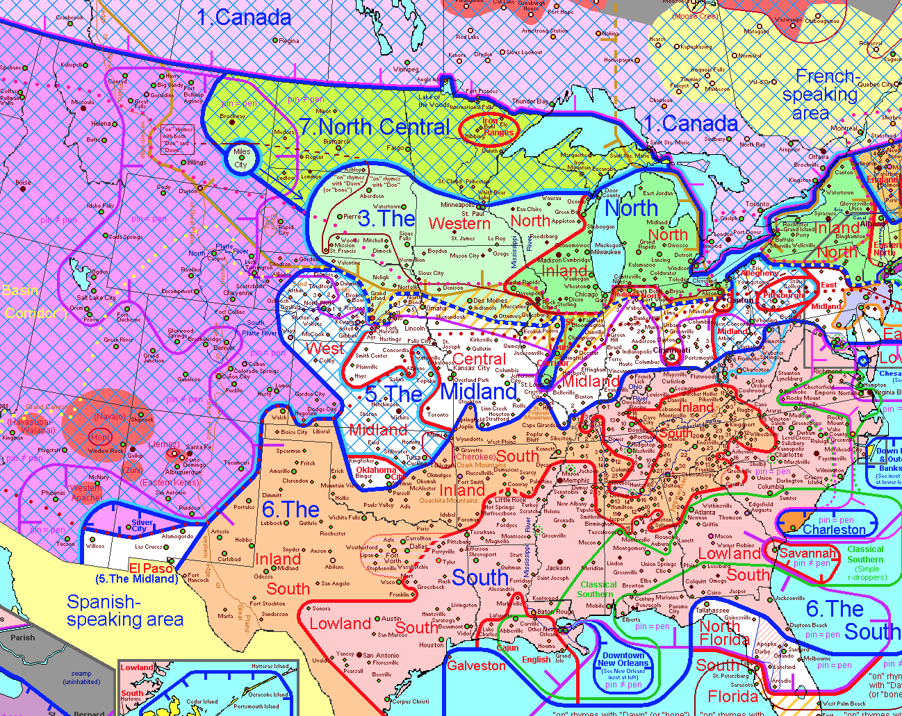
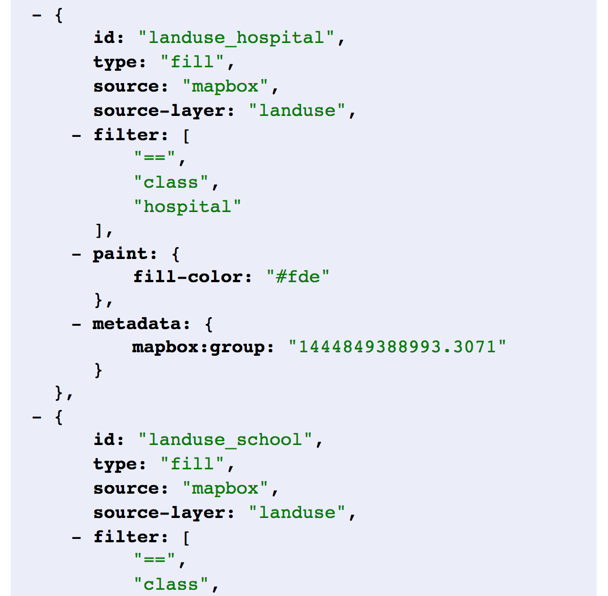

Introduction to Mapbox Studio and Mapbox GL.
PLEASE interrupt if you have any questions!
While I'm talking, either
log in to your Mapbox account or
sign up for one at
mapbox.com.
But first, who am I, who are you, and what the heck is Mapbox?
Mapbox Studio is a modern design platform for managing your spatial data and creating custom map styles.
Mapbox Studio is now your command center for interacting with Mapbox.
It also contains a sexy new data editor with a visual interface that leverages GL technology to help you build beautiful, custom maps with custom data.
It's really exciting.
But to fully appreciate this new tool, we first have to go back in time.
Agenda for today:
- A brief history of web maps
- How GL works and why it's awesome
- Walk-through of Mapbox Studio UI
- Map-making time
Ready?! Okay!

A brief history of web maps.
Before modern interactive maps, what were the basic steps to make a digital map?
- Add data
- Style data at specific scale and extent
- Export to PDF/image
With static and print maps, there was one extent and one scale to style for.
This is not to say that print cartography is easy...

... but rather to say that it is straightforward.
But on an interactive map, there are multiple scales and extents to design for.

In
1996,
MapQuest launched the
first online map service.
Their solution to the cartography problem was to create a bunch of static maps at pre-determined scales and extents.
Every "pan" of the map was really a fully new, pre-created image loading on the page.
In 2005, Google took this idea a step further when it launched Google Maps and introduced the world to map tiles.
Map tiles are 256x256 pixel PNG images that only load at the scale and extent of the map container.
This makes the map faster and more agile -- instead of loading the whole world or giant images, the page loads tiny images only in the places you're looking.
Tiling also introduced standardization to interactive maps, which facilitated a thriving ecosystem of mapping tools.
The standard includes:
- A preset list of map scales ("zoom levels")
- For each zoom level, a preset number of tiles it takes to cover the whole world
- For each tile at each zoom, a specific location the tile covers
This created an amazing, collaborative, open source mapping world that facilitated lots of interesting growth...
...including a little company called Mapbox and a little tool called TileMill.

TileMill was the first design tool from Mapbox. It was for creating interactive maps.
Thinking back, what were the three main steps to designing a print map?
- Add data
- Style data at specific scale and extent
- Export to PDF/image
For interactive maps, you want to do a lot of the same things, right?
You want to add data, style it, and export it.
The difference is you want to style for multiple scales and a global extent, and you want to export to map tiles.
The
TileMill process:
- Add data
- Style data at pre-determined scales and a global extent
- Export to map tiles
Radical! But the magic of TileMill was all happening beneath the surface.
At its core,
TileMill was a
visual interface for interacting with a much more
powerful tool:
Mapnik.
Mapnik is the monster that eats data and stylesheets and poops out map tiles with the exact right extents, at the exact right zoom levels, stored in the exact right structure.

Mapnik is magical. All hail
Mapnik.

In TileMill, users defined styles with a styling language called CartoCSS. In CartoCSS, you define how each data layer should be styled at each zoom level.
Would it blow your mind if I told you that CartoCSS was really just a pre-processor for Mapnik's XML styling specification?
So TileMill took your data and your CartoCSS style and fed them to Mapnik to create map tiles.
You could then add your map tiles to a map using Mapbox.js, OpenLayers, Leaflet, or one of many other web mapping libraries that facilitate interactions. The tiles were stored online and loaded in the browser on request.
So that was TileMill. And it worked really well for a long time.
But it had some limitations.
1. Image quality

2. Size

3. Malleability and updates
What to do?!
In an ideal world, you could create map tiles on the fly based on desired image quality and styling rules instead of storing a bunch of similar but different tilesets.
Enter vector tiles and the Mapbox vector tile specification.
Vector tiles are similar to map tiles (the world, in a grid, created with Mapnik), but they contain vector data instead of images.
Vector tiles use a super compact file type called protocol buffers, or pbfs, to keep the data both small and fully intact.
Vector tiles added a new level of efficiency to the map tile creation process.
Vector tiles separate data storage from map rendering.
With the raster tile model, rendering was the core of the operation, as images were stored. With vector tiles, rendering only needs to happen at the very end of the process.

Mapbox Studio Classic was released as a new desktop design tool to replace TileMill, focusing on this separated data/style paradigm.
It has two parts: source mode and style mode.
Source mode is for converting your vector data (GeoJSON, shapefiles, etc.) into vector tiles.
Style mode is for
creating stylesheets based on those sources.

This makes the process for using Mapbox Studio Classic a little bit different than using TileMill:
- In Mapbox Studio Classic source mode, add your vector data
- Upload to Mapbox to convert the data to vector tiles
- Grab the ID of the newly-uploaded source and add it in Mapbox Studio Classic style mode
- Style that source data at pre-determined scales and a global extent with CartoCSS
- Upload style to Mapbox
It's okay. YOU GOT THIS.
When using TileMill, your output was a set of map tiles. What is the output from Mapbox Studio Classic?
A source and a style. No raster tiles are created at all...
... until you ask for them.
Mapbox stores your style and its associated vector tile dataset. When a web map is created using your style's ID and the browser requests tiles, the style and source are passed to Mapnik to render into map tiles ON THE FLY.
So this is the solution to the problems we outlined before, right?
Images generated on the fly mean no storage or malleability issues.
But... there are still limitations to this pattern.
Mapbox Studio Classic signaled a shift in the way sources and styles were managed on the server side...
... but the client-side behavior did not change: image tiles served to the browser in a grid, loaded when necessary at specific zoom levels.
The outputs of Mapbox Studio Classic are essentially basemaps with no truly interactive data.
To add interactive data, you need to add an overlay using your web mapping library and GeoJSON data, and there are limitations...
Unless you enjoy crashing browsers, of course!
Another bummer is the jumpyness when going bewteen zoom levels. And tile loading is fast, but not that fast.
What to do?!
We separated styles from sources when implementing vector tiles, so now the two are independent of each other.
Who says we need to keep using Mapnik to render image tiles? Why don't we just use a different renderer that better meets our mappy needs?
So we did. And we called it Mapbox GL.
[This is where we move on to the second part of our agenda.]
How GL works.
Mapbox GL is a way to render maps with vectors in the browser rather than as images on the server.
Up until now, all rendering has been happening server-side with Mapnik. Vector tiles are combined with CartoCSS styles, fed to Mapnik, and raster tiles are created and served to the browser.
With Mapbox GL, the rendering happens in your browser with the help of your device's graphics processing unit.
This makes map loading hella crazy stupid fast. It also means you can do cool stuff like rotating and tilting the map, smooth/infinite zooming, and more!
So in a practical sense, how does this work?
Because maps are being rendered in the browser (or on a device), we have to give some guidance on what to draw and how to draw it.
The stylesheet contains all the information needed to draw your map, including references to data, fonts, images, and, most importantly, styling rules.
These styling rules are defined in the spec as layers -- styled representations of data in your map.

So what does Mapbox Studio do? It is a visual interface for creating GL stylesheets.
Plus it's like, totally intuitive and pretty and easy to use.
Almost everything you do in Mapbox Studio relates directly to something in the Mapbox GL Style Specification -- especially creating and editing layers.
[Now we move onto part three!]
Walk-through of Mapbox Studio.
If you see this page, click Home in the top right.
As I mentioned in the beginning, Mapbox Studio is a modern design platform for managing your spatial data and
creating custom map styles.
First we'll create a new style, add some data, and make some edits to it. Then we'll explore the rest of the platform.
On the Home page, look for the Styles panel and click New style.

You will be prompted to select a
template to start with. Click
Basic, then click
Create.
Welcome to the Mapbox Studio style editor!
In the bottom right corner, you should see a blue monster that's trying to say hello!
If you don't see that, click Help in the top right of the page and click where it says Intro under Tips.
The first thing it shows us is the layers pane. Each layer type has different styling options.
For any selected layer you can both edit its style and change the data it's styling.
Click anywhere on the map to see which layers are at that location.
Search applies to both geographic locations and style layers.
I want to mention a few other things before we get started.
Layers are drawn on the map from the bottom up. The ones at the top of the list are going to be on top of the others in the map.
You can create multiple layers from the same data.
The
template maps (like the
Basic map we're staring with here) use
Mapbox Streets vector tiles. This dataset does
not have
all data at
all zoom levels.
There's a lot of really cool stuff you can do with Mapbox Studio. Let's dive right in! In the Layers panel, Click on the water layer.
Click the Color field and change the water to a nice light purple.
Ooh, pretty!

Now click the
slider next to the
Color field and click
Enable styling by zoom level.
This is where it starts to get fun!
This panel creates a smooth transition between colors as you zoom.
Pick a dark color to fade to and adjust the zoom levels slightly (from 5 to 10, say).
Click on water in the layer panel to close the panel, then zoom in on the Great Lakes.
Cool, right?
We can also do this with text. Open the place_label_city layer and click the Size field to see how it's currently set.
Edit this field so instead of 16px at zoom level 8, the ramp goes to 30px at zoom level 12.
Beautiful! This map is really coming along.
Let's save and poke around the rest of Mapbox Studio for a moment. In the top of the Layers panel, click the purple button that says Publish. Click Publish again at the prompt.
Click Okay, then click the Home button in the left sidebar. Your new style should be there!
Click on the title of your map to see its style information page.
This page shows the data that's being used in the map style as well as the layers that style that data. bridge is a good example of a single set of data that has multiple layers.
In the right sidebar, there is a link to Share this style. Copy the link and open it in your browser.
This is a good time to mention...
With the introduction of
Mapbox GL also comes a new
JavaScript web mapping library:
Mapbox GL JS.
Just like Leaflet and Mapbox.js know how to take map tiles and GeoJSON and draw them correctly, Mapbox GL JS knows how to take a stylesheet and draw it correctly.
Other than this share link, Mapbox GL JS and the Mapbox mobile SDKs are the only way to publish your map.
Okay, back to Mapbox Studio! Click Edit on the info page to go back to the style editor.
Make some rad styles! When we come back, we'll talk Mapbox GL JS.
Now that we've seen Mapbox Studio, let's talk a bit more about Mapbbox GL JS.
This will just be a brief overview. We'll get into much more detail next time during the lab.
Remember how we talked about Mapbox GL stylesheets? Mapbox GL JS can't do much without one.
There are a few ways to give Mapbox GL JS a stylesheet.
1. Point to a stylesheet hosted on mapbox.com.
Mapbox-hosted
style JSON starts with
mapbox://
var map = new mapboxgl.Map({
container: 'map',
style: 'mapbox://styles/mapbox/streets-v8',
center: [-74.50, 40],
zoom: 9
});
2. Point to a stylesheet hosted somewhere else.
For example:
https://github.com/mapbox/mapbox-gl-styles/blob/master/styles/basic-v8.json
3. Point to a local copy of your style JSON.
3.5. Add and modify style rules on the fly with Mapbox GL JS
In addition to styling on the fly, Mapbox GL JS lets you control the
camera...
link
...access information about your map's
underlying data...
link...add
video to your map....
link...
filter data on the fly...
link...and lots more.
Here are a few experiments and demos to check out:
Whew! We just covered a lot of ground. Let's do a quick recap and wrap up for the day.
What did we learn today?
We learned about how web maps came to be!
We learned about GL and how it works!
We learned how to use the Mapbox Studio interface!
We made our own map styles!
And we got our first look at Mapbox GL JS.
HOLY CARPS, Y'ALL! That's awesome!
You totally kicked butt today. Pat yourself on the back.
Keep playing! Keep making stuff! It just gets more fun!
Thanks. See you on Wednesday!
Dan Swick
dan@mapbox.com
@danswick